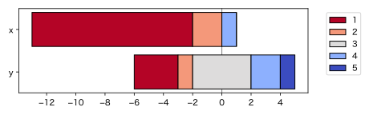
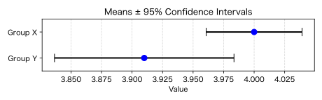

$t$ 検定とMann-Whitneyの $U$ 検定（とBrunner-Munzel検定）
「$t$ 検定はデータが正規分布をしていないと使えない。正規分布でない場合はMann-Whitneyの $U$ 検定（Wilcoxon-Mann-Whitney検定、Wilcoxonの順位和検定ともいう）のようなノンパラメトリックな（順位だけに基づいた）検定を使え」とよく言われてきました。
われわれが観測するデータは、一般に正規分布をしていないので、それなら $t$ 検定は使うべきではなく、常にノンパラメトリックな検定を使えばいいのでしょうか？
でもAndrew Gelman御大は Don't do the Wilcoxon なんてことを言っておられます。本当にややこしい。
そもそも $t$ 検定が何を検定するかというと、データの平均値の差です。データがほとんどどんな分布をしていようと、データの平均値はほぼ正規分布になる（データの個数が増えると正規分布に近づく）という「中心極限定理」があるので、正規分布に基づく検定で近似して大丈夫なはずです。データの分布が正規分布でないから $t$ 検定を使うな、というのは、疑問です。特に、分散が等しいことを仮定しない $t$ 検定（Welchの検定）は、両群の分布の違いに対しても頑健です。
中心極限定理が成り立たないCauchy（コーシー）分布のようなものもあります。Cauchy分布は外れ値の多い分布で、平均値も分散も定義できません。例えばイーロン・マスクが入っているかもしれないグループで資産の平均を求めても意味がありません。このような場合は平均値ではなく中央値を使うべきです。
このような例外はあるものの、中心極限定理は多くの場合に成り立ちます。特に、1が「反対」、2が「やや反対」、3が「どちらでもない」、4が「やや賛成」、5が「賛成」のようなアンケートの回答、いわゆるLikert（リッカート）尺度のデータについては、外れ値もないので中心極限定理は成り立つはずです。Geoff Norman (2010), Likert scales, levels of measurement and the “laws” of statistics はこの立場を擁護する論文です。
一方、Torrin M. Liddell and John K. Kruschke (2018), Analyzing ordinal data with metric models: What could possibly go wrong? は、Likert尺度のデータを平均値で評価すると、ordered-probit model の潜在変数の平均値の大小関係と逆転する例を挙げ、順序尺度に平均値を使うべきでないと主張しています。
ちょっと極端な例ですが、次の例を考えましょう。アンケートで、赤組は全員「ほぼほぼ賛成」、青組は半分が「大賛成」、残りが「大反対」と答えたとします。
「ほぼほぼ賛成」（目盛6）が「大賛成」（目盛7）に近いと考えれば赤組の方が賛成に偏っていると言えます。一方、順序関係しか考えないMann-Whitneyの $U$ 検定やBrunner-Munzel検定では、両群の差はないことになります。
上の例は人工的すぎると感じられたかもしれませんが、散らばりの小さい群Xと大きい群Yとで、平均値はXが有意に大きいけれどもノンパラメトリックな検定ではYが有意に大きいような現実的な例はいくらでも作れます（後で例を挙げます）。
Likert尺度のデータの扱いについては、ほかにもいろいろな意見がありうるでしょうし、意見の違う査読者から突っ込まれることもあり、悩ましいところです。迷ったら併記するくらいでしょうか。
いずれにしても、「有意かどうか」を考える前に、データをまずはグラフで表して、よく観察しましょう。
実例で考えてみましょう。乱数データでもいいのですが、$t$ 検定などで例として使ったLumleyのデータを例にとります：
x = [1, 2, 1, 1, 1, 1, 1, 1, 1, 1, 2, 4, 1, 1] y = [3, 3, 4, 3, 1, 2, 3, 1, 1, 5, 4]
見るからに y の方が大きそうです。まずは可視化。ヒストグラムでもいいのですが、ここでは中央揃え帯グラフ：

2群の平均値の差の $t$ 検定（分散が等しいことを仮定しないWelch検定）の結果は、$p = 0.00948$、95%信頼区間 [-2.36, -0.38] です。各群の平均値と95%信頼区間は次の図のようになり（→ エラーバー参照）、Y群の方が大きいことが見てとれます。

Mann-Whitneyの $U$ 検定（厳密な検定）では $p = 0.00669$ となります。また、Brunner-Munzel検定（厳密な検定）では $p = 0.00804$ となります。どちらもY群の方が大きいことになります。
特に指定されない限り、$t$ 検定では両群の分散が等しいと仮定しないWelchの検定、ノンパラメトリックでは両群の分布が同じだと仮定しないBrunner-Munzel検定の方を使うべきです。
次の例は、間隔尺度的な見方と順序尺度的な見方が逆転する例です。1000人ずつの2群の比較です。
x = [3]*200 + [4]*600 + [5]*200 y = [1]*50 + [2]*100 + [3]*150 + [4]*290 + [5]*410

何となくXの方が大きいように見えます。どちらでもない意見の人を除けば、Xは賛成派ばかりですが、Yは150人も反対派がいます。

各群の平均と信頼区間を見てもXの方が大きいようです。$t$ 検定の結果は $p = 0.034$ です。
Brunner-Munzel検定の結果も $p = 0.022$ で有意ですが、$P(X < Y) + 0.5P(X = Y) = 0.529$、95%信頼区間は $[0.504, 0.554]$ となり、両群からランダムに一つずつ選んで比較すればXの方が小さいことが多いという結果になりました。信じられないかもしれないので計算してみましょう：
s = 0
for u in x:
for v in y:
s += (u < v) + (u == v) / 2
print(s / (len(x) * len(y)))
結果は 0.529 です。つまり、順序尺度的にはXの方が小さいのです。これは、アンケート結果の1〜5を間隔尺度として見たときの大小関係と、順序尺度として見たときの大小関係が逆転する例です。どちらの方が研究者の意図に合致しているでしょうか。難しい問題です。
なお、上の帯グラフではXの方が大きく見えてしまいましたが、最頻値はYの方が大きいことも見てとれます。また、両群とも中央値は4ですが、Xの中央値は4の真ん中あたりで、Yの中央値は4の中でも5寄りのところなので、Yの方が大きいのだ、とする考え方もあるかもしれません。潜在変数的に見れば、Yは4より5が多いので大きい側で飽和してしまっているだけで、本来はもっと大きい潜在値があるのだ、という考え方もできます（これがLiddell and Kruschkeの考え方に近そうです）。
以下は昔やったシミュレーションの結果です。